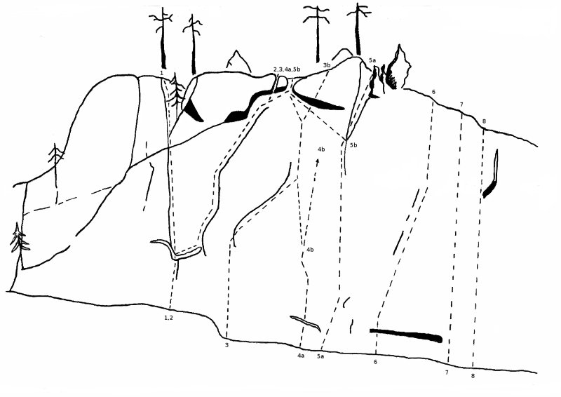

Gylterud
GPS: 59.72534077357537,12.777099609375
Allmänt
Naturskön trad-klippa strax söder om Mangskog. Ett trevlig ställe med en del roliga leder och visst nyturspotential.
Beskrivning
I anslutning till de två största och markantaste väggarna finns även Värmlands största grotta (Gylterudsgrottorna), som med sina 50 meter av gångar i sig är värt ett besök. Klaustrofobivarning på ingångshålet. tänk tunn.
Lederna är gissningsvis 15-20 meter långa och klippan är i övrigt fast och relativt mossfri. Lederna består mestadels av sprickleder men undantag finnes. I närområdet, högre upp i terrängen finns även ett antal småväggar där en del nyturer kan etableras. I dagsläget är klättringen mest koncentrerad till nedre väggen och det är främst denna som avhandlas nedan.
På Gylterudsväggen gäller bultförbud. Topprep kan med fördel sättas i de många träd som finns men statiskt rep/långa slingor anbefalles. Väg till toppen finns på vänster sida om berget.
Boulders går också att etablera på de många block som är utspridda i ravinen/bäcken och bland väggarna. Dessa problem är förmodligen aldrig klättrade och om de gjorts finns inget dokumenterat.
Accessregler:
Sunt förnuft. Dvs. lämna berget som du skulle vilja hitta det och visa hänsyn till människor och övrig flora/fauna.
Vägbeskrivning
Kör från Arvika på riksväg 61. Efter drygt 1 mil ska du svänga vänster mot Mangskog. Fortsätt på denna väg tills du ser en skylt (egentillverkad?) mot Gylterudsgrottorna åt vänster. Har du kommit ända fram till Mangskog har du kört för långt. Lite oklart att hitta vid första försöket, men sök och du ska hitta.
Följ grusvägen och håll höger. Efter något hundratal meter når du något som kan liknas vid en parkeringsficka eller en mindre vändplats. Här parkerar du fordonet. Fortsätt på (skogs)vägen till fots. Mitt i en uppförsbacke (efter något hundratal meter) bör du höra en bäck på höger sida och se en stig som leder till den. Följ stigen, korsa bäcken (egentillverkad bro), vandra över några stenblock och väggen är rakt fram.
Nedre Väggen

- 0
- ???
- 4-5isch?
- Längst till vänster har en led putsats fram, men endast gjorts på topprep pga osäkra klättrare. Börjar någon meter till vänster om arkeologen och letar sig snett uppåt höger.
- 1
- Arkeologen
- 5
- Första kruxet kommer redan i början, upp till den lilla hylllan. Det andra är vid utsteget. En typisk gylterudsled som erbjuder lagom svår, välsäkrad men framförallt fin klättring.
- 2
- Den flygande holländaren
- 5-
- Samma insteg med krux som Arkeologen, viker sedan till höger mot utegskruxet. Mycket väl och lättsäkrad om man vet var kilsprickorna är. För den duktige finns ett tidigare utsteg i den stora sprickan. En klassiker.
- 3a
- Zipper
- 6+
- Så blev den äntligen klättrad, säg vem som inte spanat på den. Den är nog bergets längsta led med sin bakvända S-form. Kallas Zipper efter att Jocke gjorde ett 5m fall vid förstabestigningen, vid vilka alla kilar utom den sista rippade. Senare har ett 10m markfall gjorts så att leda bör övervägas mer än en gång. Att sätta en bult i kruxet har övervägts, men bultfritt berg hade högre prioritet. I kruxet där sprickan viker av uppåt behövs ett par skor med bra friktion. Görs vanligtvis med låg travers då man kan stå på den lilla hyllan. Samma utsteg som holländaren.
- 3b
- variant
- ?
- Vik ej av mot holländaren utan gå rakt fram över det lilla överhänget.
- 4a
- Speed is the key
- 6+/7-
- Börjar mellan Zipper och Ingenting och slutar vid den förras krux. Flott väggklättring på små grepp.
- 4b
- variant
- 7(?)
- Istället för att gå Zippers utsteg, så kan man gå till höger om detta. En aningens diffus.
- 5a
- Ingenting
- 4+
- Trevlig led med naturlig sträckning. Utsteg i kaminen till höger.
- 5b
- Engqvist travers
- 5-
- Variantutsteg till ingenting. Under det lilla överhänget till Holländarutsteget.
- 6
- Dörrkarmen
- 6-
- Följ den lilla sprickan snett uppåt höger. Kruxet kommer smygande i mitten. Klättring när den är som bäst, prova och njut.
- 7
- Projekt
- ?
- Borstad av Jonne och Sören en kall höst 2008, men var för blöt och kall för att leda. Nytt försök någon under 2009?
- 8
- Projekt
- ?
- Om någon gjort/gör den så uppdatera.
Stora väggen
Denna vägg är inte så utvecklad och är ännu ej avtecknad. Vissa partier är intressanta ur klättringssynpunkt. Tyvärr ganska problematiskt att sätta topprep, men det går.
- 1
- Jävulstrappan
- 5+
- På vänsterdelens ytterhörn. Börjar med en liten hylla som går åt vänster, viker sedan upp till höger till en stor sluttande hylla. Från denna, något överhängande upp till näta avsevärt mindre hylla. Kruxet kommer på sluttampen, en bit innan man når den lilla granen som markerar ledens slut. Besvärligt att toppsäkra och nervig att leda.
- 2
- Projekt
- ?
- Till höger om hörnet, på den jobbigt överhängande väggen finns framförallt intressanta sprickor. Den första är den stora sprickan som börjar en bit upp på hörnet. Ser ut att bli något av det luftigaste, vildaste och brutalaste i nejden. Den andra börjar istället en bit upp till höger, men har samma utsteg. Den toppsäkrade kan få stor pendel och sten i handen om han inte ser upp.
Bouldering
Denna klippa har på senare tid uppmärksammats ytterligare då X antal boulderproblem etablerats på de stora blocken i närheten av de övriga klippväggarna.
Ryktet gör gällande att problemen håller hög klass och är nejdens finaste.
Förare över boulderproblemen finns i Arvika boulderförare som hittas på följande länk
Kategori:Värmland
Kategori:trad
Kategori:vertikalt
Kategori:bouldering
Copyright (C) Permission is granted to copy, distribute and/or modify this document under the terms of the GNU Free Documentation License, Version 1.3